Department のレコードの一覧を表示するテーブルの追加
見出しの追加
-
アーティファクト・ブラウザの 「Web Applications」 タブ
 をクリックします。
をクリックします。 -
「flows」 および 「main」 ノードを展開し、「main-start」 をクリックします。 アプリケーション・デザイナで main-start ページが表示されます。
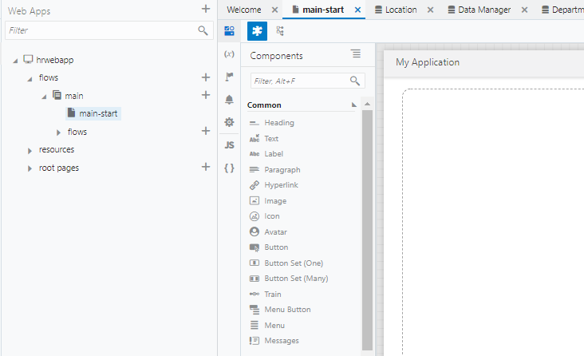
アプリケーション・デザイナの左側には、コンポーネント・パレットが表示されます。 コンポーネント・パレットは、デザイナの左上にある
 （Component Palette）アイコンで表示/非表示を切り替えることができます。
（Component Palette）アイコンで表示/非表示を切り替えることができます。また、アーティファクト・ナビゲータも表示/非表示を切り替えることができます。 アーティファクト・ナビゲータ非表示にするには、右上にある
 （Collapse App Nav）アイコンをクリックします。
（Collapse App Nav）アイコンをクリックします。アーティファクト・ブラウザが非表示のときに 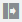 （Expand App Nav）アイコンをクリックすると、再びアーティファクト・ブラウザが表示されます。
-
ページに見出しを追加します。 コンポーネント・パレットの 「Common」 の下にある 「Heading」 コンポーネントをページにドラッグ＆ドロップします。

-
ページに Heading コンポーネントが追加されると、プロパティ・インスペクタで Heading コンポーネントの設定を変更できます。 デザイナ・ツールの右側にプロパティ・インスペクタが表示されない場合は、画面右上に表示される 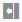 （Collapse Property Inspector）アイコンをクリックします。
Heading コンポーネントのプロパティ・インスペクタで、 「Text」 フィールドに
部門一覧と入力します。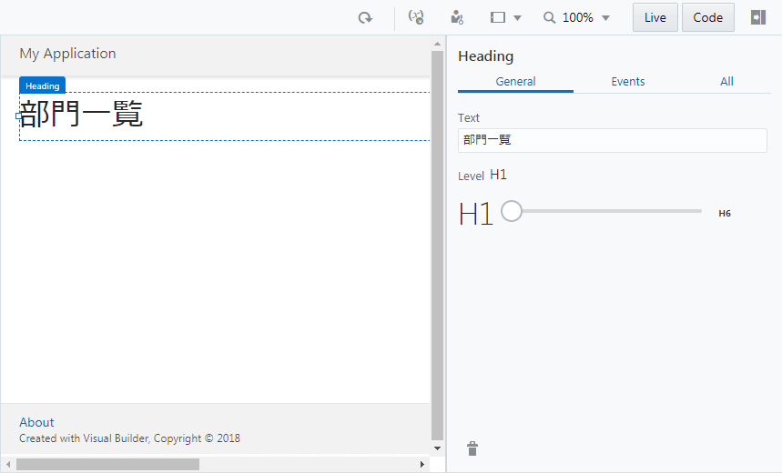
テーブルの追加
-
コンポーネント・パレットを下にスクロールし、 「Collection」 カテゴリの 「Table」 コンポーネントを、追加済みの Heading コンポーネントの下にドラッグ＆ドロップします。
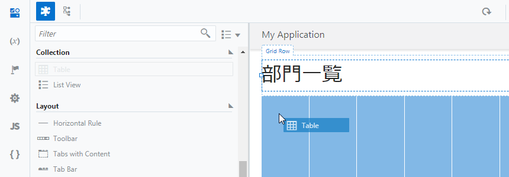
-
追加された Table コンポーネントのプロパティ・インスペクタで
 （Quick Start）タブを開き、「Add Data」 をクリックします。
（Quick Start）タブを開き、「Add Data」 をクリックします。
-
「Add Data」 ダイアログ・ボックスが表示されます。 「Locate Data」 ページでは、テーブルに表示するデータを取得する REST エンドポイントを選択します。 「Business Objects」 の 「Department」 を選択します。
この手順により、REST エンドポイント（GET /Department）にてデータを取得する設定ができます。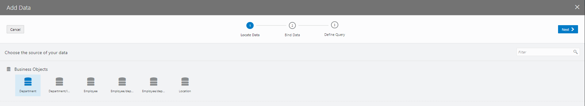
「Next」 ボタンをクリックします。
-
「Add Data」 ダイアログ・ボックスの 「Bind Data」 ページでは、テーブルの列を選択します。 「item[i]」 ノードの下の 「id」 と 「name」 を順番に選択します。

「Add Data」 ダイアログ・ボックスの右側にあるColumnsリストに、 「items/id」、 「items/name」 の順に表示されていることを確認します。 表示されている順番が異なる場合は、 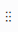 をドラッグ ＆ ドロップして順番を入れ替えます。
-
次に、 「locationObject」 とその下の 「items」 ノードを展開します。 このとき、 「item[i]」 ノードも同時に展開されるので、「name」 をチェックします。

「Columns」 リストの一番下に、「name」 が追加されていることを確認したら、「Next」 ボタンをクリックします。
-
「Add Data」 ダイアログ・ボックスの 「Define Query」 ページでは、そのまま 「Finish」 ボタンをクリックします。
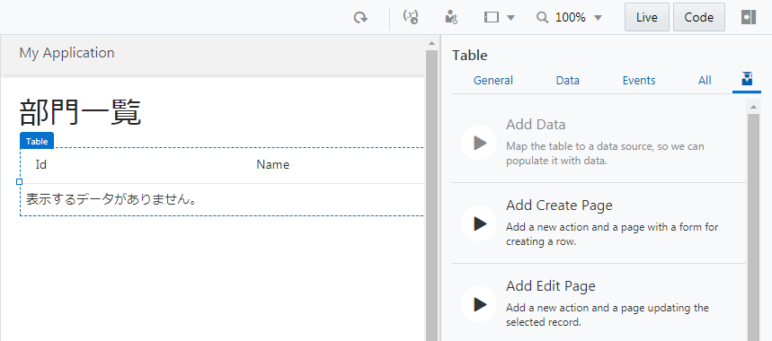
追加されたテーブルの設定の確認と変更
-
アプリケーション・デザイナの 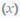 （Variables & Types）アイコンをクリックします。 アプリケーション・デザイナの Variables エディタでは、ページに定義された変数が一覧できます。 main-start ページには、 「departmentListSDP」 という名前の変数が定義されています。
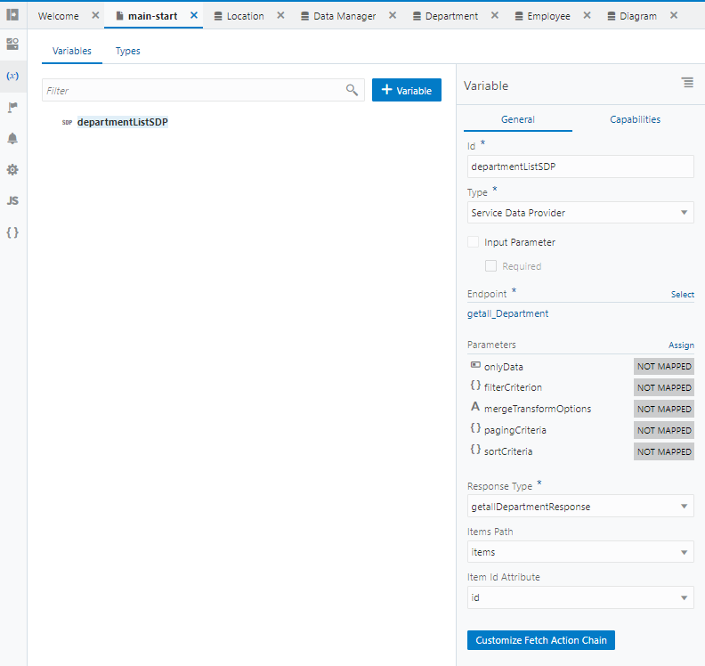
この変数は、Quick Start メニューによって設定した REST エンドポイント（
GET /Department）によって取得したデータを保持します。 -
アプリケーション・ナビゲータの 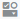 （Designer）アイコンをクリックします。 追加されたテーブルをクリックし、プロパティ・インスペクタの 「Data」 タブ・ページを開きます。 「Data」 フィールドには、テーブルに表示するデータの設定が記述されています。
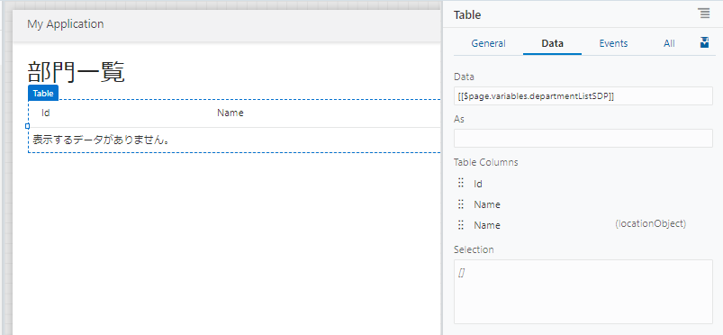
-
テーブル・コンポーネントのプロパティ・インスペクタの 「Data」 タブ・ページでは、テーブルの列ヘッダーのテキストを変更できます。
- 「Table Columns」 リストの上から二番目の 「Name」 をクリックして
部門名に変更します。 - 「Table Columns」 リストの一番下に表示されている 「Name」 をクリックして
所在地に変更します。
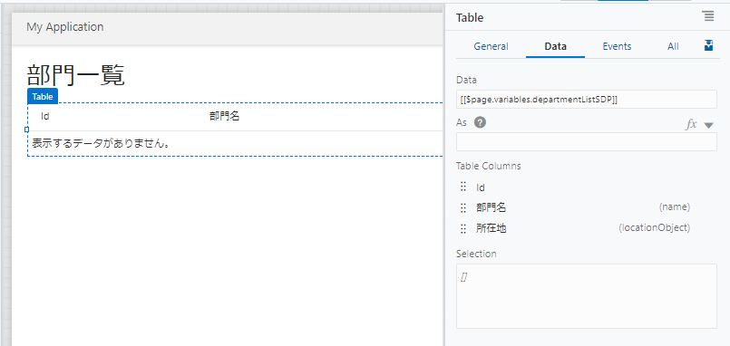
- 「Table Columns」 リストの上から二番目の 「Name」 をクリックして
次にDepartment のレコードを作成するページの追加に進みます。